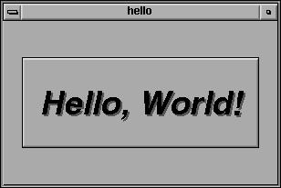

#include <FL/Fl_xyz.H>Microsoft Windows developers please note: case *is* significant under other operating systems, and the C standard uses the forward slash (/) to separate directories. Do not do any of the following:
#include <FL\Fl_xyz.H> #include <fl/fl_xyz.h> #include <Fl/fl_xyz.h>
CC -I/usr/local/include ... gcc -I/usr/local/include ...Similarly, when linking your application you will need to tell the compiler to use the FLTK library:
CC ... -L/usr/local/lib -lfltk -lXext -lX11 -lm gcc ... -L/usr/local/lib -lfltk -lXext -lX11 -lm
You can build your Microsoft Windows applications as Console or WIN32 applications. If you want to use the standard C main() function as the entry point, FLTK includes a WinMain() function that will call your main() function for you.
Note: The Visual C++ 5.0 optimizer is known to cause problems with many programs. We only recommend using the "Favor Small Code" optimization setting. The Visual C++ 6.0 optimizer seems to be much better and can be used with the "optimized for speed" setting.
Listing 1 - "hello.cxx"
#include <FL/Fl.H>
#include <FL/Fl_Window.H>
#include <FL/Fl_Box.H>
int main(int argc, char **argv) {
Fl_Window *window = new Fl_Window(300,180);
Fl_Box *box = new Fl_Box(20,40,260,100,"Hello, World!");
box->box(FL_UP_BOX);
box->labelsize(36);
box->labelfont(FL_BOLD+FL_ITALIC);
box->labeltype(FL_SHADOW_LABEL);
window->end();
window->show(argc, argv);
return Fl::run();
}
After including the required header files, the program then creates a
window:
Fl_Window *window = new Fl_Window(300,180);and a box with the "Hello, World!" string in it:
Fl_Box *box = new Fl_Box(20,40,260,100,"Hello, World!");Next, we set the type of box and the size, font, and style of the label:
box->box(FL_UP_BOX); box->labelsize(36); box->labelfont(FL_BOLD+FL_ITALIC); box->labeltype(FL_SHADOW_LABEL);Finally, we show the window and enter the FLTK event loop:
window->end(); window->show(argc, argv); return Fl::run();The resulting program will display the window below. You can quit the program by closing the window or pressing the ESCape key.

Fl_Widget(x, y, width, height, label)
The x and y parameters determine where the widget or window is placed on the screen. In FLTK the top left corner of the window or screen is the origin (i.e. x = 0, y = 0) and the units are in pixels.
The width and height parameters determine the size of the widget or window in pixels. The maximum widget size is typically governed by the underlying window system or hardware.
label is a pointer to a character string to label the widget with or NULL. If not specified the label defaults to NULL. The label string must be in static storage such as a string constant because FLTK does not make a copy of it - it just uses the pointer.
You could examine the boxtype in by doing box->box(). Fltk uses method name overloading to make short names for get/set methods. A "set" method is always of the form "void name(type)", and a "get" method is always of the form "type name() const".
Almost all of the set/get pairs are very fast, short inline functions and thus very efficient. However, the "set" methods do not call redraw() - you have to call it yourself. This greatly reduces code size and execution time. The only common exception is value() which calls redraw() if necessary.
The labelfont method sets the typeface and style that is used for the label, which for this example we are using FL_BOLD and FL_ITALIC. You can also specify typefaces directly.
The labelsize method sets the height of the font in pixels.
The labeltype method sets the type of label. FLTK supports normal, embossed, shadowed, symbol, and image labels internally, and more types can be added as desired.
A complete list of all label options can be found in Chapter 3.
while (Fl::wait());Fl::run() does not return until all of the windows under FLTK control are closed by the user or your program.